お休みの日がございます
RESTAURANT
ソースまでが、
一皿です。
古河の住宅街で、夫婦ふたりのフランス料理店を営んでおります。肉の皿にも魚の皿にも、その皿のためのソースを合わせて。どうぞ普段着でお越しください。
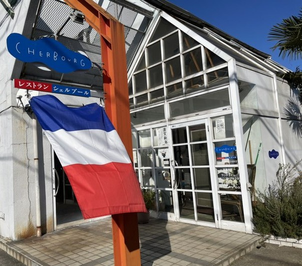
お品書きの名前を、うしろから読んでみてください。ボンヌファム、マデラ酒風味、赤ワイン風味——当店の品は、うしろ半分がソースの名です。素材を決めたら、残りの半分はソースの仕事。そこにいちばん手をかけております。
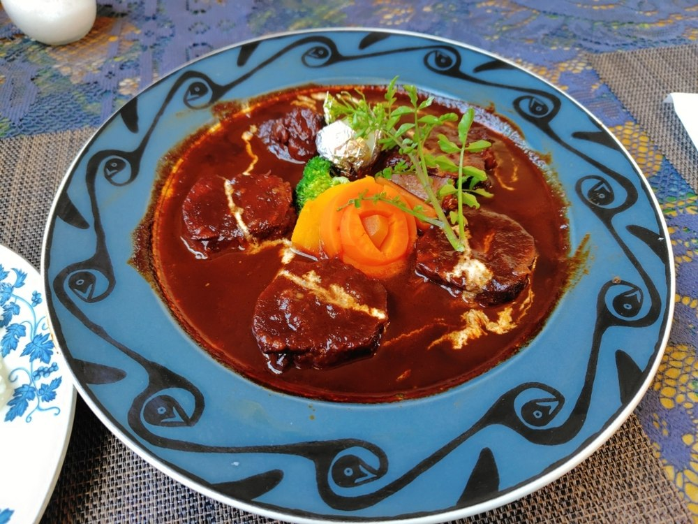
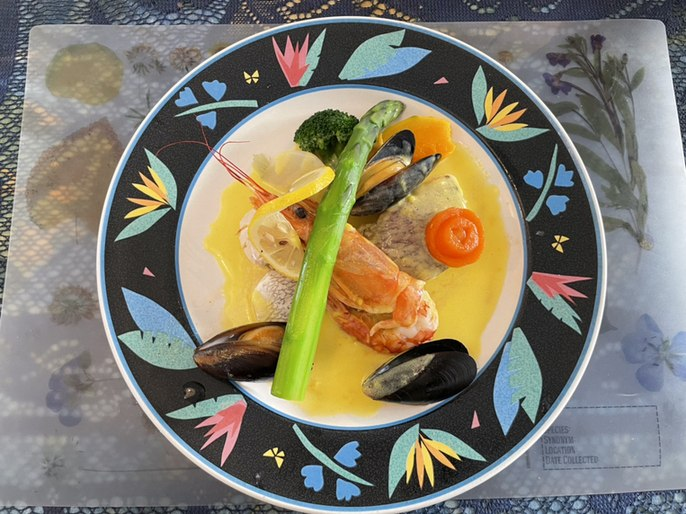
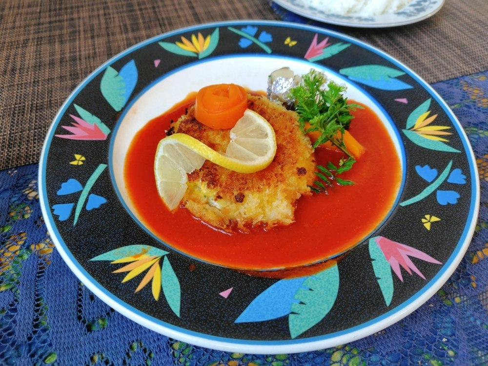
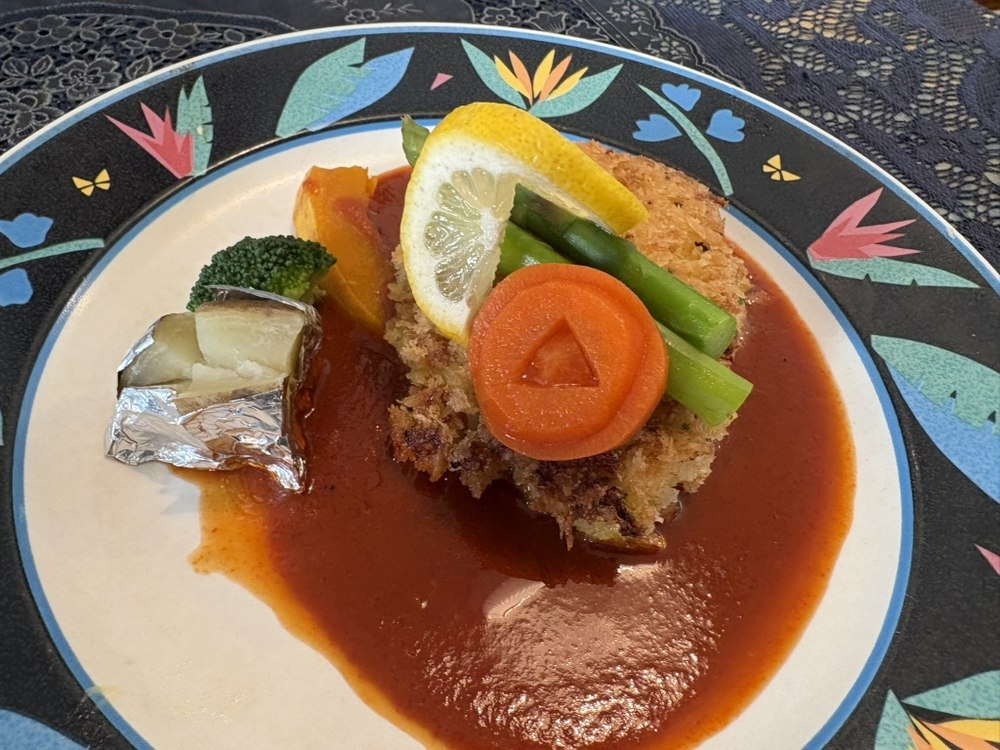
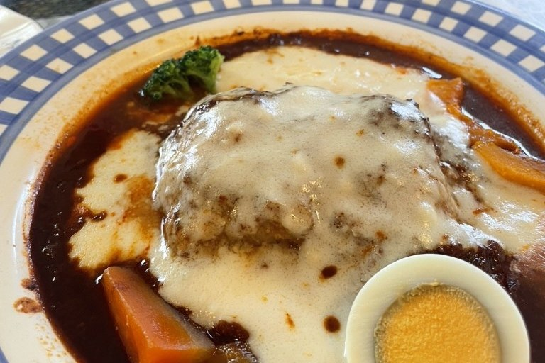
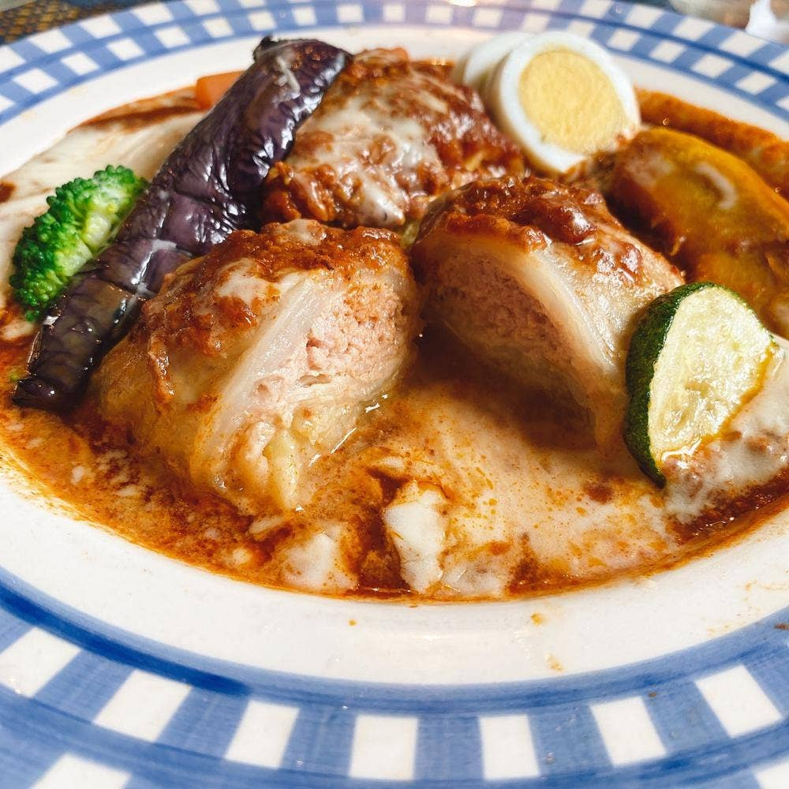
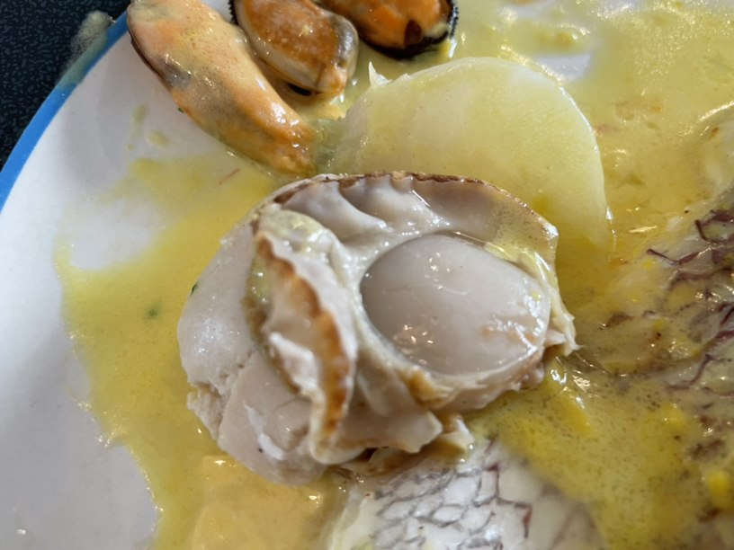
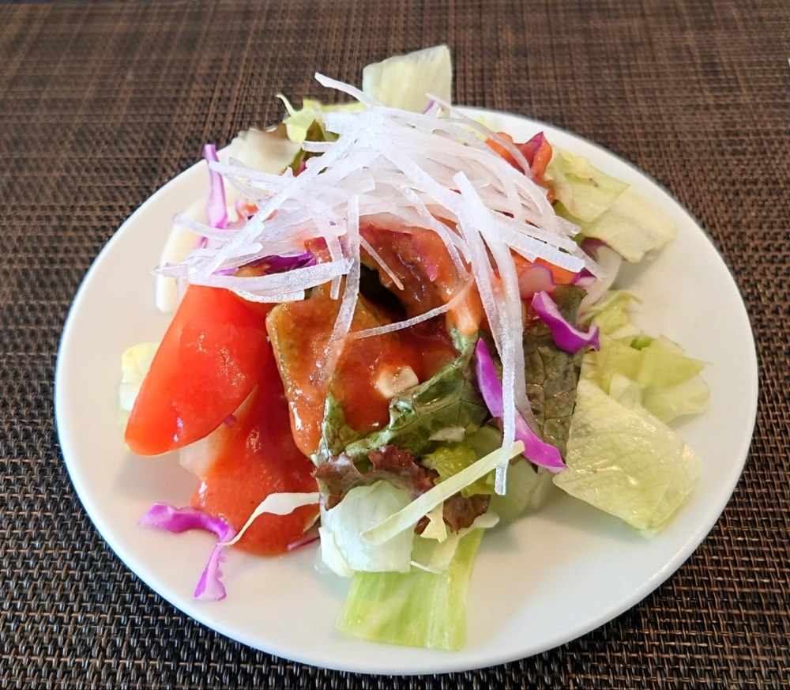
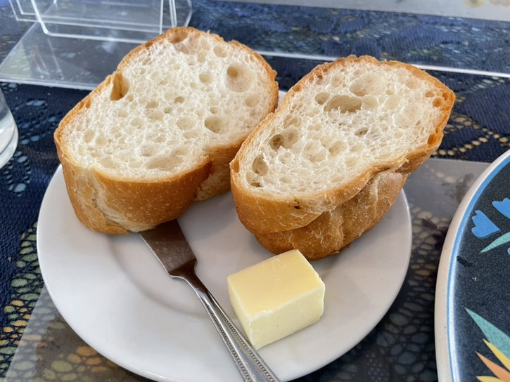
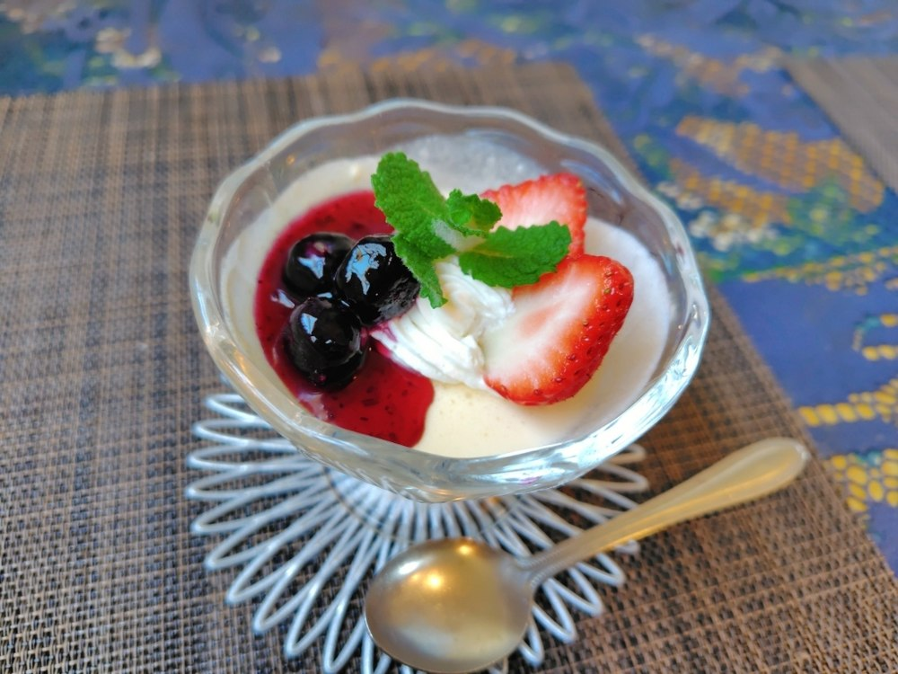
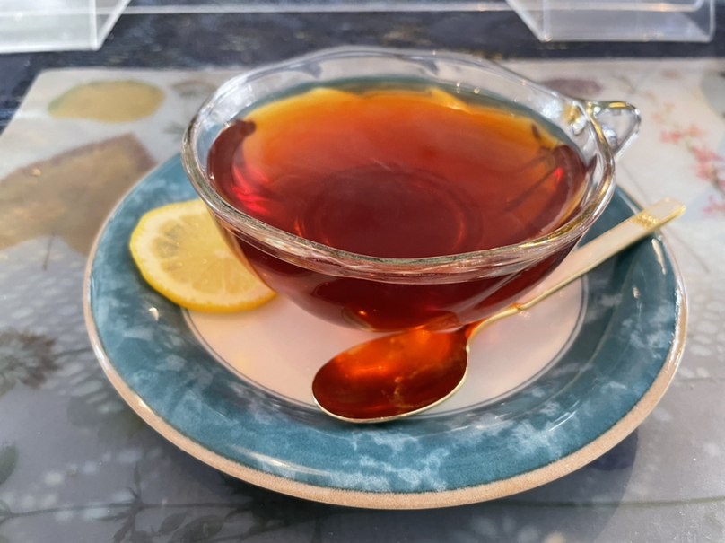
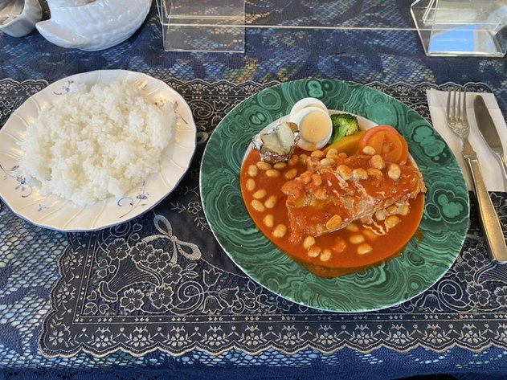
白い切妻屋根に総ガラス張り、フランス国旗を掲げた一軒家が当店です。晴れた日には、ガラス越しの日ざしがお席まで届きます。厨房に主人、お席に妻。ふたりで一皿ずつお作りしてお出ししますので、どうかごゆっくりお過ごしください。
カウンターのお席と、テーブルのお席をご用意しております。おひとりのお昼にも、ご家族のお祝いの席にも、どうぞお使いください。店内は全席禁煙です。
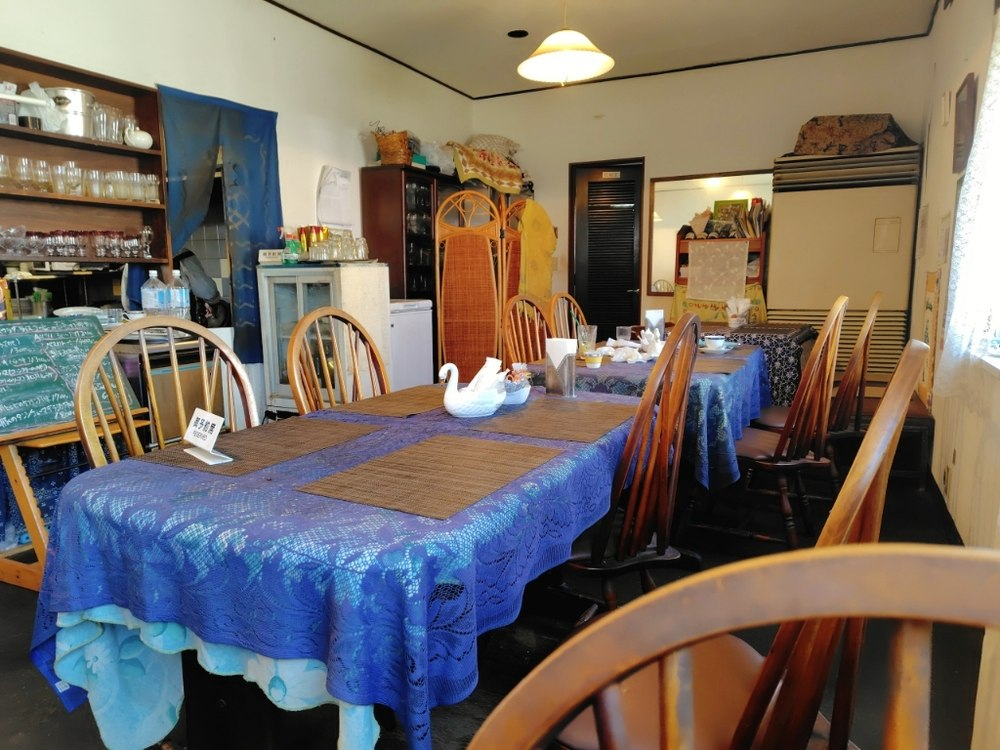
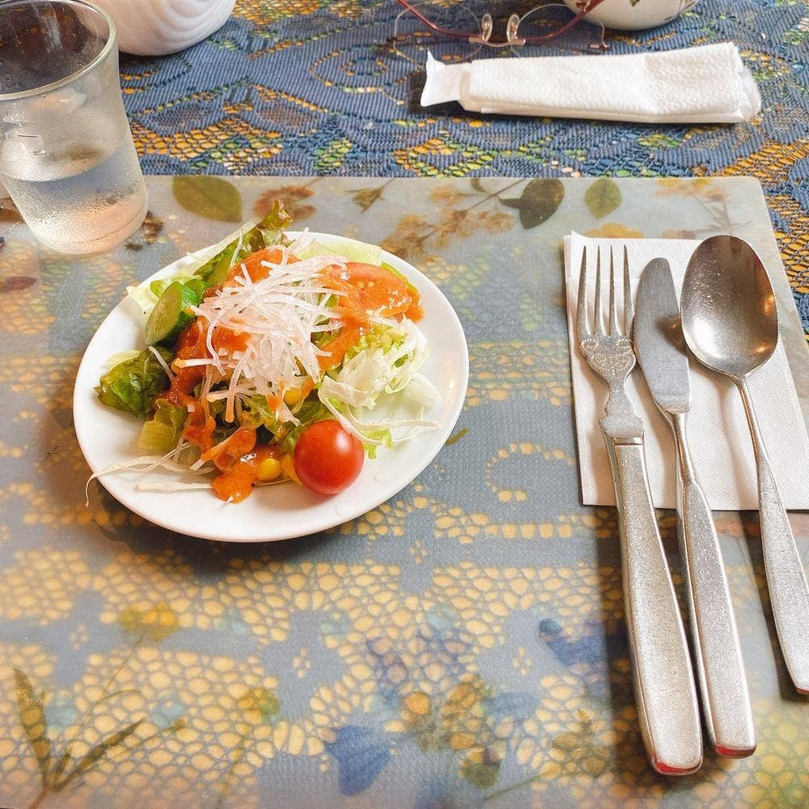
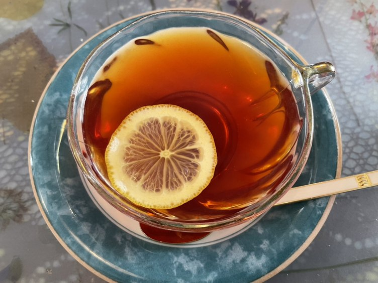
「肉料理でも魚料理でも、シェルブールさんのソースはいつも素晴らしく、大袈裟でなく本当に皿まで舐めたくなってしまいます。」
Zircon Papa さん（2024年11月訪問）
「先ずデミを一口／えっ！本物だ〜！／ルーの濃さ、コク、塩味、香り、余韻の苦味、どれをとっても洋食屋のレベル超えてました」
rapport・ラポール さん（2026年5月訪問）
「気軽で良心的なお値段で居心地もいいので、3世代でも来れるような暖かいお店でした。」
粉パンダ さん（2022年1月訪問）
古河第二高等学校のすぐ近く、バス停「二高裏門前」からもお越しいただけます。お車の方は、店の手前の角を曲がった先、砂利敷きのところに駐車場がございます。プレートを出しておりますが、暗いと分かりにくいかもしれません。そのときはご遠慮なくお電話ください。お支払いは現金でお願いしております。お休みをいただく日がございますので、お電話でお確かめのうえお越しください。
| 住所 | 〒306-0024 茨城県古河市幸町20-7 |
|---|---|
| 電話 | 0280-32-6902 |
| 営業時間 | ランチ 11:30〜14:00 ディナー 17:30〜21:00 |
| 定休日 | お電話でお確かめください |
| お席 | カウンター席・テーブル席 |
| 駐車場 | 有（砂利敷き） |
| お支払い | 現金のみ |
今日の黒板を書いて、ソースを仕込んで、お待ちしております。